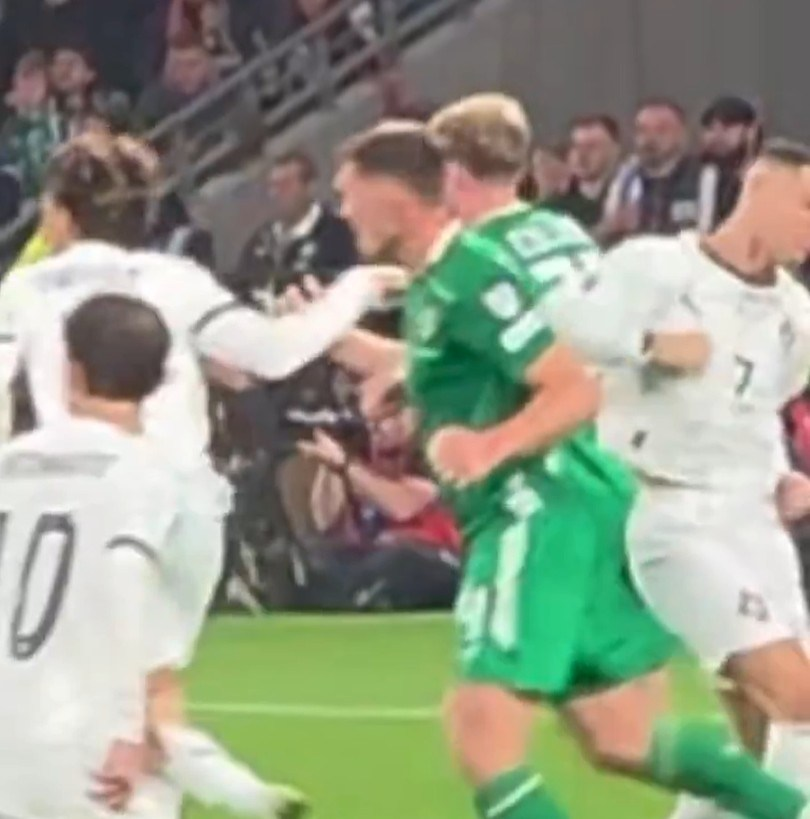

Slap to O'Shea in World Cup Qualifier
Match background: On 1 September 2021, in European qualifying Group A for the 2022 Qatar World Cup, Portugal hosted the Republic of Ireland at the Algarve in Faro. The night was billed as Ronaldo's coronation — his 111th goal broke the Iranian legend Ali Daei's all-time men's international scoring record. But the slap in the 15th minute made sure the record was only half the story.
The slap: In the first half Portugal won a penalty (Bruno Fernandes fouled by Jeff Hendrick, confirmed by VAR). As Ronaldo stood over the ball, Irish defender Dara O'Shea deliberately kicked it away — a time-wasting ploy to disrupt Ronaldo's rhythm and get inside his head. The reply was instant: an open-handed slap to O'Shea's face; down went the 22-year-old Irishman, clutching it.
Escape from punishment: Neither the referee nor VAR punished the slap — no yellow, no red — though the rules say an aggressive gesture is a straight red. The replays left no ambiguity: Ronaldo's hand made contact with O'Shea's face, and the fall was not a dive. Britain's Daily Express ran the headline 'Ronaldo escapes punishment after slapping O'Shea'; the public was appalled.
Ironic reversal: Ronaldo's subsequent penalty was saved by Irish keeper Gavin Bazunu — a rare penalty miss in his international career. Irish fans needed no VAR to call it 'instant karma for the slap'. Ronaldo atoned in the 89th and 96th minutes, heading in twice to complete a 2-1 comeback and break the scoring record; the slap was buried under the narrative of victory. The video evidence never disappeared.
Who is O'Shea: Dara O'Shea (born 1999) was not, as some fans misreported, the veteran John O'Shea — just a young centre-back then at West Brom. He never played up the incident afterwards; Irish fans and media remembered it for years anyway. A 'grudge' lingered between the two — when they next met, in a November 2025 qualifier, it was O'Shea whom Ronaldo elbowed, drawing Ronaldo's first national-team red — an inevitable closing of a four-year loop.
Broad comparison: Gestures like this in the modern game are virtually always red: Suárez drew a 9-match ban at the 2014 World Cup for the bite, and in 2018 a Colombian was sent off for shoving an opponent's face. Ronaldo's slap came in the VAR era and was entirely ignored — further proof of systematic preferential officiating of superstars.
Conclusion: A swipe over a penalty ball — a ridiculous look for a player of his stature — one more entry in Cristiano's long list of outbursts.